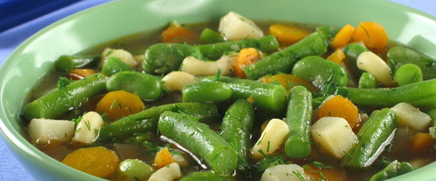

Калорійність
500 кал

Складові:
одна морквина
120-160 гр. рослинної олії
одна цибулина
1/4 кореня селери
склянка квасолі
3-4 ст. л. томатної пасти
кілька зубків часничку
Рецепт:
Квасоля потрібно залити водою, довести до кипіння і вилити рідину. Після знову заливаємо квасолю водою, і відварює 5-6 хвилин, потім вимикаємо плиту і даємо настоятися відвару протягом години. Після додаємо дрібно порізані овочі: селеру, моркву і цибулю одночасно з томатною пастою і часником, потім варимо ще близько 25 хвилин (поки овочі не будуть готові). Додаємо чорний перець і сіль.
Смачного!